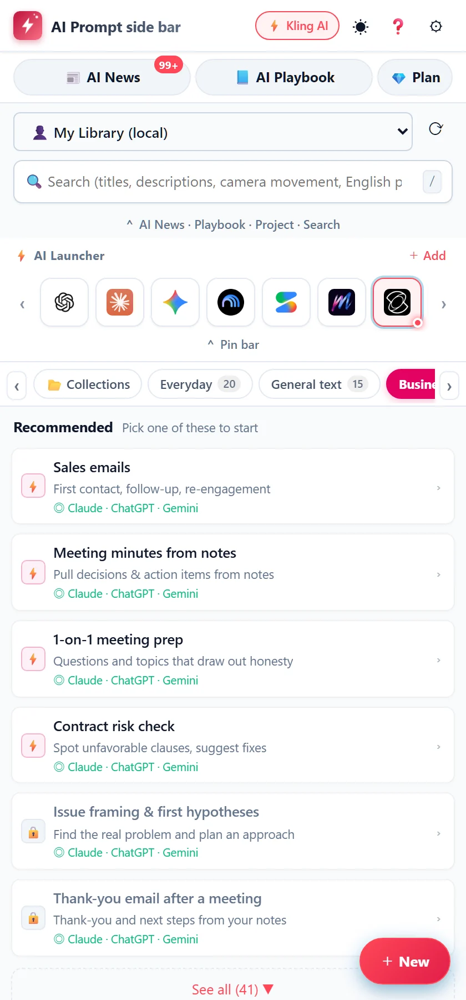

Collect them in a notes app or save them inside each AI, and the work of using them is still there every time. The difference is how fast a prompt gets into your AI, and that it works the same way in every AI.
What we compare
Copy and paste from notes
Saved inside each AIGPTs, Gems and so on
LB AI Prompt side bar
Getting it into the AI
Open, find, copy, paste
Open that AI, then choose
Pick, then one click
Which AIs
Anywhere (paste every time)
Only inside that AI
22 AIs, same steps
Image and video AI
Paste only
Not available
Straight into Kling, Runway and more
Changing the details
Rewrite by hand each time
Fix it in the chat
Options and blanks
Ready-made prompts
Collect your own
Search public ones
200+, sorted by purpose
What you write
Stays in your notes
Stored by that AI company
We can't read it
Features
Everything you need,right beside your AI.
200+
Ready-made AI commands
Daily life, writing, business, management, video pre-production, development, web and apps, assets and design, image generation, video generation (from images, text or video), editing and more. More are on the way.

22AIs
AI launcher
ChatGPT, Claude, Gemini, Kling, Runway… One tap opens them.
Alt+A
Open together
One shortcut opens the side panel and your AI at the same time.
★★★★☆
Ratings, most-used, search
Rate them from 1 to 5 ★, sort by most used, search to bring them back. The more you use it, the better it fits.
4 recommended commands per tab, the latest AI news, the "AI Playbook", plus Insert, Copy, search and ★ ratings. No sign-in needed.
Paid plans
Grow your own prompts
Save your own prompts
Project sets
Reference images and files
AI translation (your own API key)
Save to Excel
Sync across computers
For video creators
Pick the shot.Get the prompt.
Camera moves, light, lenses, speed. Build directions for video AI from simple options, then send the finished prompt straight into Kling, Runway, Luma, Hailuo or Midjourney.
Image to video (I2V)Choose the camera move, angle, lens and light
Text to image and videoDirect the look with real film techniques
Video editing (V2V)Film texture, color grading, style transfer
Pre-productionThree concept ideas, client hearing sheets, schedules to Excel
★ I2V Builder【Camera moves】Basic camera moves
Angle
Low angle (heroic)
Camera move
Dolly zoom
Speed
Slow and smooth
Lens
Anamorphic
Lighting
Volumetric light
↓dramatic low-angle shot looking up, heroic posture, dolly zoom, the lone rider, slow and smooth motion, shot on anamorphic lens, 2.39:1 widescreen, volumetric lighting, atmospheric god rays…
Insert into Kling, Runway, Luma
Commands
200+ AI commands,ready to pick.
Choose a tab to see its commands. The ones marked "Free plan" stay free, for as long as you like.
TroubleAsk about any problemFree planNot sure where to turn with a problem? Just write whatever comes to mind, and the AI will sort it out and tell you what to do and who to ask.
TroubleComputer, phone, or appliance not working rightChecks problems like "won't turn on," "slow," or "can't connect" one step at a time, starting with the easiest fixes.
TroubleNeighbor & relationship worriesSorts out relationship worries with neighbors, friends, family, coworkers, and others into feelings and facts, and works out how to say it.
MessagesWrite an apology, a refusal, or a requestWrites 3 versions of a message that conveys something hard to say without being rude.
LearnExplain it simply (What is ...?)Free planGet a term or mechanism you're curious about explained clearly, with an analogy.
LearnCompare what to buyCompares what to look for and the candidates before you buy appliances, household goods, services, and more.
LearnExplain the news in plain languagePaste a news article to get the key points, the background, and what it means for you, explained in plain language.
Daily lifeMeal ideas from what's in your fridgeGet meal ideas you can make with just the ingredients you have, with recipes included.
Daily lifePlan a trip or outingBuild a realistic, not-too-packed plan for a trip or outing from your destination, trip length, and budget.
Daily lifeCleaning, laundry, and stain removalLearn how to remove dirt and stains, starting with the safest methods that won't damage the material.
FortuneToday's horoscope (quick, by zodiac sign)Get a short, upbeat reading for today based on your zodiac sign. Just for fun.
FortuneSort out your feelings with tarotDraw tarot cards for what's on your mind and use them as hints for sorting out your feelings. Just for fun.
FortuneFortune by birthday numbers (numerology)Calculate your "life path number" from your birth date to read your personality tendencies and this year's theme. Just for fun.
FortuneCompatibility reading (zodiac and numerology)Read how well two people get along from their zodiac signs or birthdays, with tips for getting along better. Just for fun.
FortunePalm reading (from a photo of your palm)Paste a photo of your palm into "📷 Reference image" to get a reading of your personality and fortune from the lines of your hand. Just for fun.
StudyLearn what you don't understand from an AI tutorFree planThe AI teaches you step by step, asking questions along the way. It's a way to learn how to solve problems yourself, not just get the answers.
StudyStudy plan for an exam or certificationWork backward from your exam date to build a day-by-day study plan.
StudyCreate a quiz (check your understanding)Paste your textbook or notes to get a quiz that checks whether you've understood the material.
StudyGet memory tricks (tips for memorizing)Get ways to remember hard-to-remember terms, dates, vocabulary, and more.
StudyEnglish conversation practice partnerPractice speaking English with the AI. It adjusts to your level and gently corrects your mistakes.
Universal structureAll-purpose template based on the 3 major AIs' official guidanceFree planA basic format that blends the official recommendations of Gemini, OpenAI, and Claude for the most accurate results
Claude structureXML tag template recommended by AnthropicThe officially recommended XML tag structure (instructions / context / input / output_format) that maximizes Claude's understanding
ThinkingRequirements definition with follow-up questions (Gemini style)Free planFrom a rough idea, the AI asks you 5 follow-up questions to dig into and organize your specs and requirements
EditingBusiness email & text rewrite (OpenAI style)Free planTurns wordy text or hard-to-say messages into a professional, concise email
Meeting notesExtract decisions & to-dos (Claude-style XML structure)Free planPrecisely extracts decisions and to-dos with owners and deadlines from meeting minutes or chat logs, as JSON or a table
DecisionsMulti-angle sounding board: Pros/Cons & risk analysisWhen deciding on a measure or policy, objectively examines the pros, the cons, and a third alternative
SummaryExecutive summary (long documents / PDFs)For busy decision-makers: condenses the background, issues, core points, and actions into a structure they can grasp in 1 minute
Issue responseSincere apology & recovery proposalA message that lays out a sincere apology, the cause, and prevention measures after a missed deadline or a defect
Business EnglishWrite formal English emails & translate into EnglishCaptures the nuance of your message and writes a polished business email in English, the way a native speaker would
SpreadsheetsAuto-create formulas, GAS & macrosGenerates the best Excel or Google Sheets formula or script for what you want to do
IdeationOsborn's checklist (expand into 10 ideas)Breaks through a creative rut on an existing product, process, or project with 9 perspectives
Code reviewLogic check & refactoring (reasoning-based)A step-by-step logical review that finds bugs and security issues and improves performance
Dev masterAll-purpose full-stack development frameLocks in your tech stack, design principles, type safety, and error conventions to generate high-quality code
Story designMaster builder for world, era & characters, step by stepPick the world, era, ethnicity, generation, fashion, and conflict step by step, and get a film proposal, synopsis, and video prompts generated in one go
Character sheetEthnicity, generation, costume & backstory profileA detailed profile that locks down the performer's appearance, ethnic roots, fashion era and fabric feel, motivations, and signature lines
SalesSales emails (first contact, follow-up, re-engagement)Free planWrite a sales email tailored to the recipient's situation, with subject line ideas.
SalesTurn meeting notes into a thank-you emailJust paste your sales meeting notes to get a thank-you email with the key points and next steps.
SalesPre-meeting company research and issue hypothesesBased on public information, organize the key points about the company and hypotheses about what they may be struggling with.
SalesDraft a proposal outline (structure)Build a proposal outline, with what each page should say, from the client's challenges and your proposal.
SalesSales role-play (the AI plays the customer)Practice a sales meeting with the AI playing the customer. When you're done, send "End" to get what went well and what to improve.
SalesPrepare for likely questions and how to respondPrepare ahead of time for the questions and objections likely to come up in a sales meeting, and how to answer them.
AdminCompany-wide notices and announcementsWrite internal announcements about policy changes, rules, events, and more.
AdminCreate an FAQ from employee inquiriesCreate frequently asked questions and answers from internal rules and past inquiries.
AdminDraft revisions to company policies and manualsCreate a revision draft and a before/after comparison table from your current policy and your revision goals.
AdminTurn meeting notes into minutesFree planCreate meeting minutes that clearly show decisions and to-dos from your meeting notes or transcript.
AdminIdeas for company events and trainingGet several proposals for a company event or training session based on your purpose, headcount, and budget.
AdminCreate a checklist for a procedureTurn procedures such as onboarding, offboarding, and office moves into a checklist with nothing missed.
AccountingBudget vs. actuals: reasons and commentaryFrom your monthly figures, find the items with large gaps against budget and last year, get hypotheses for the reasons, and draft commentary for your report.
AccountingMonthly summary for executivesCreate a summary that executives can read in one minute from figures such as revenue and profit.
AccountingCash flow forecast (3 scenarios)Build a cash flow forecast with optimistic, baseline, and pessimistic scenarios from your cash balance and planned inflows and outflows.
AccountingCheck expense reports against company policyCompare expense claims against your internal policy and flag anything that looks problematic.
AccountingEmployee guide to expense rulesTurn your expense policy into an easy-to-follow guide and FAQ that employees can use without confusion.
HRWrite a job posting or job adCreate a job posting that makes people want to apply, from the job duties, terms, and ideal candidate profile.
HRInterview questions and evaluation sheetStandardize interview questions and evaluation criteria from the position's requirements, to reduce differences between interviewers.
HRWrite performance review commentsWrite convincing evaluation comments based on facts (results and actions).
HRHiring result emails to candidatesWrite emails about passing resume screening, interview scheduling, rejections, job offers, and more.
HRTraining and onboarding planBuild a plan for new-hire training, on-the-job training, and more by working backward from the goal.
HRInternal HR and employment FAQCreate common HR and employment questions and answers from your work rules and policies.
ManagersPrepare for a 1:1 (topics and questions)Free planPrepare topics and questions for a 1:1 based on your team member's situation.
ManagersTurn tough feedback into constructive wordingRewrite your notes on what you want to say so the other person can take it in and change their behavior.
ManagersRole-play a difficult conversationPractice a difficult conversation with the AI playing your team member. Send "End" to get a debrief.
ManagersDevelopment plan for a team memberBuild a phased development plan from your team member's current skills and goals.
ManagersAgenda for a regular team meetingCreate an agenda for a regular meeting that fits in the time you have, based on progress and issues.
ManagersPrioritize your tasksSort a pile of tasks by importance and urgency, and decide what to delegate.
Back officeLegal: Contract risk review and revisionsFree planIdentify risky clauses in a contract and suggest revisions.
Back officeLegal: Draft terms and policiesDraft terms of service, privacy policies, internal regulations, and more.
Back officeIT: Help desk FAQ and reply templatesCreate an internal help desk FAQ from past inquiries and manuals.
Back officeIT: Write an incident reportCreate an incident report that shows the timeline, cause, and preventive measures from your response notes and logs.
Back officeCorporate planning: Organize industry and competitor researchOrganize industry trends and a competitor comparison from the information you've collected.
Back officeCorporate planning: Outline for an executive meeting deckBuild the structure of a document that is likely to get approved at an executive meeting, from your conclusion and data.
ConsultingDefine the key issues and an initial hypothesisBreak down the issues and form an initial hypothesis from the client's situation.
ConsultingProposal storyline and page structureBuild a proposal storyline tailored to your audience, and the main point of each page, from the background and hypotheses.
ConsultingAnalyze with a frameworkOrganize your collected information with frameworks such as SWOT, 3C, and PEST.
ConsultingHave the AI challenge your hypothesis (sounding board)The AI pushes back on your hypothesis and exposes its weak points. Use it as a check before you make a proposal.
ConsultingOrganize interview notes into "current state, issues, causes"Turn scattered interview notes into a structured summary table.
ConsultingHave the AI review your document and point out weak spotsHave the AI review your document and point out weak logic and missing information.
Think & decideBusiness sounding board (the AI asks questions to sort out your issues)Free planAnswer the AI's questions to break an unresolved concern down into clear issues.
Think & decideCompare your options side by side (decision support)Free planInstead of a simple yes/no, compare several options against the same criteria.
Think & decideWork backward from failure (pre-mortem)Free planAssume "this plan failed a year from now" and uncover blind spots and overly optimistic assumptions.
Think & decideDraft a medium-term plan (3-year)Build the framework and milestone table for a 3-year plan from your vision and current numbers. Also useful for drafting grant applications.
Think & decideIdentify business risks and countermeasuresOrganize the risks facing your company by likelihood and impact, and work out countermeasures.
Think & decideFind new business ideas (starting from your strengths)Discover customer segments, products, and ways of selling that you haven't tapped yet, based on your strengths and current customers.
NumbersFigure out why a number moved and how to verify itWhen revenue or profit swings sharply, organize possible reasons and ways to check them.
ExternalPrepare for tough questions (Q&A prep)Free planPrepare for the tough questions likely to come from your board, bank, investors, or business partners, with draft answers.
ExternalExplanations for banks, investors, and business partnersTurn the figures and initiatives you want to convey into a one-page brief or email tailored to the reader.
Org & peopleMessage to employees (morning meeting, New Year, all-hands)Turn your policies and vision into a script in plain language that employees will understand.
Org & peopleHow to deliver difficult news (reorganization, change of direction)Plan how to deliver news that people may react to differently, such as reorganizations, strategy shifts, or policy changes, including the order of communication and the wording.
Org & peoplePut your mission, vision, and guiding principles into wordsDraft several options for your mission, vision, and guiding principles from your founding story and what you value.
My timeTake stock of your work and delegate (free up your time as CEO)Sort your tasks into "only I can do it / delegate / train, then delegate / stop," and plan how to hand them off.
My timeGet book recommendations for what's on your mindWrite down your concerns as they come, and get book recommendations that can help you think. Works best with an AI that can search (Gemini, ChatGPT search, Perplexity, etc.).
My timeFind YouTube videos for what's on your mindWrite down your concerns as they come, and get ways to find helpful YouTube videos plus some candidates, along with search links you can open right away.
PlanningCome up with 3 concept directionsFree planGives you 3 concept ideas in different directions based on your goal, target, and medium. A starting point for planning meetings.
PlanningClient intake questionnaireCreates intake questions tailored to your video type so nothing is missed in the first meeting.
PlotCreate a plot (synopsis & structure)Free planCreates the video's plot (synopsis, structure, and highlights) from your concept direction.
PlotScene breakdown & time allocation to fit the lengthSplits the plot into scenes that fit the length and assigns a duration to each scene.
ScriptNarration & dialogue script (word count worked out from the length)Free planWorks out how many words fit in the length, then writes the narration and dialogue script.
StoryboardCreate a shot table (text version of a storyboard)Free planTurns your structure into a shot table with the visuals, camera, and movement of each shot. A blueprint before you draw the storyboard.
Shoot prepShot list & call sheetCreates a shot list in shooting order and a call sheet by location and person from your shot table.
Shoot prepLocation scouting checklistTurns what to check when scouting locations into a checklist tailored to your shoot.
Shoot prepCasting requestCreates a request to a casting company or talent agency based on the kind of performers you want.
ScheduleProduction schedule (for Excel export)Creates a production schedule worked backward from the delivery date. Paste the table you get back into the "📅 Schedule maker" at the top of this tab to export it to Excel.
ScheduleShoot-day timetable (for Excel export)Creates a minute-by-minute timetable for the shoot day. You can export the table to Excel with the "📅 Schedule maker".
EstimateList the items for a rough estimateIdentifies every item to include in an estimate from your concept (enter the amounts using your own unit prices).
Gen AICreate image & video generation prompts for each shot from a plotCreates English prompts for image generation (T2I) and video generation (I2V) for each shot from your plot or shot table. Works well together with the I2V Builder and the AI Launcher.
GemBasic instruction template (role, goal, response style)Free planA basic template to paste into the "Instructions" field of the Gem editor. Choose from the options and fill in the blanks to get a solid framework. Start here, then refine it with the "Improvement loop" presets below.
GemVideo prompt assistant (I2V / T2V)Gem instructions that turn your directing intent, written in your own language, into English prompts for video generation AI. Designed for Liquid Block Inc.'s production flow (still image → video).
GemImprovement loop 1: Generate test questionsUse this in a regular Gemini chat. Paste your current Gem instructions to get test questions that check whether it works as intended. Send those questions to your Gem and review the results.
GemImprovement loop 2: Fix the instructions from a failed exampleFree planUse this in a regular Gemini chat when your Gem doesn't answer as expected. You'll get an analysis of the cause and the full revised instructions, so you can swap them into your Gem and test again.
NotebookLMSet the chat role and response styleFree planInstructions to enter in NotebookLM's chat settings (conversation customization). Setting a role for each notebook keeps the quality of answers consistent.
NotebookLMCustomize the Audio OverviewFree planInstructions to enter in the "Customize" box when creating an Audio Overview. Defining the audience and focus makes the result easier to share within your company.
NotebookLMFind gaps and conflicts in your sourcesA check-up prompt for building up your notebook. Paste it into the chat to spot missing materials and contradictions, and decide which sources to add next.
NotebookLMCreate a comparison table and briefingCreate a comparison table and summary you can use as-is in meetings from the articles and materials you've collected. Handy to use after adding articles with "📚 Copy URLs for NotebookLM" in AI News.
Dev masterAll-purpose full-stack development frameFree planA basic frame that tells the AI your project's tech stack, design principles, type safety, and error conventions in one go
RequirementsFunctional requirements & user storiesFree planTurns early-stage feature ideas into a backlog with Given-When-Then acceptance criteria, ready to use in agile development
DesignAuto-generate a DB schema & TypeScript typesFree planTurns screen specs and entity relationships into a Prisma Schema and shared front/back-end TypeScript types in one go
FrontendBuild a reusable UI componentA ready-to-use React component built with Tailwind CSS and TypeScript, with loading/error states and accessibility (a11y) in mind
BackendAPI handler & Zod validationGenerates input checks, DB operations, and 401/400/500 error responses as a complete Server Action / Route Handler
QA & TestingAuto-generate unit tests (Vitest / Jest)Outputs unit test code that covers not only the happy path but also edge cases (null, boundary values, empty arrays, timeouts)
Web full-stackNext.js (App Router) + Prisma + Tailwind optimizationFree planA Next.js-focused prompt that strictly separates the Server/Client boundary and safely handles Zod validation and Prisma transactions
Mobile appReact Native (Expo) + Supabase + RLS optimizationA mobile-focused prompt built around SafeArea, FlashList performance, and Supabase RLS security SQL
ArchitectureFeature-driven directory structure & conventionsDefines a feature-based directory layout and 6 placement rules that hold up as your Next.js (App Router) + Prisma project scales
API integrationOpenAPI / Swagger spec (auto-generated YAML)Prevents front-end/back-end mismatches by converting your spec into OpenAPI 3.0 (YAML) in one step as soon as it is decided
3D iconClaymorphism app UI iconA 3D app icon with a soft, Blender-style clay texture, friendly rounded shapes, and soft shadows
3D iconGlassmorphism frosted-glass UIA next-gen premium UI icon of clear and translucent frosted glass, with beautiful inner light refraction and edge highlights
Cutout assetPure white background, single object (3D product)Free planA high-quality single 3D object on a pure white background, so one-click background removal in Photoshop or Figma comes out perfectly
Cutout assetEffects, particles & 3D splashesFluid splashes, light particles, and energy effects to layer over designs and banners for a sense of motion
VectorModern flat illustration, business & techSimple, polished modern flat vector illustrations, a staple on SaaS landing pages and company blogs
VectorIsometric tech sceneAn isometric diagram illustration that shows cloud integration, data flows, and office work in a 3D bird's-eye view
Abstract backgroundFluid 3D liquid wave for landing page key visualsFree planA smooth, glossy 3D fluid ribbon wave, perfect for website hero sections and ad banner backgrounds
Abstract backgroundAurora mesh gradientA refined mesh-gradient background where trendy Apple-style blur and aurora light blend beautifully
PatternSeamless repeating geometric patternA seamless (tileable) geometric texture that repeats endlessly for wrapping paper, packaging, and web backgrounds
PatternLuxury marble & kintsugi textureA premium, luxurious texture of flowing marble veining with kintsugi-style gold lines
Mockup3D cylinder podium, product display studioA studio-lit cylindrical pedestal that makes cosmetic bottles or product photos look pro the moment you place them on it
StickerDie-cut sticker with a thick white borderA pop, cute die-cut sticker design with a white border and a slight drop shadow
LogoGolden ratio, minimal geometric vector logoA minimal symbol mark designed on a golden-ratio grid, ideal for startups and brands
PosterCinematic movie teaser posterA dramatic, weighty key visual like the posters displayed in movie theaters, with space at the top and bottom for the title and credits (--ar 2:3)
PosterExhibition, Swiss-style modern art posterGeometric art and carefully calculated white space, based on Bauhaus and International Typographic Style (--ar 2:3)
PosterMusic festival & event, live concert posterA design with energetic fluid, neon, and psychedelic visuals that make the event name stand out (--ar 2:3)
PosterRetro tourism, vintage travel posterA classic poster in the style of 1930s–50s silkscreen printing, with beautiful scenery and a bold composition (--ar 2:3)
PosterCommercial ad, product promotion posterFree planA key visual for new products or brand campaigns, with space left where the tagline stands out most (--ar 2:3)
ThumbnailBusiness, education & explainer (classic, text space on left)Free planFor business, investing, the latest tech, and how-to explainers. A smart, confident performer on the right, with dark empty space on the left for huge text overlays (--ar 16:9). 【When using the person's photo】Attach their photo to an AI that accepts images, such as ChatGPT or Gemini, then send this prompt (use only photos the person has given permission to use).
ThumbnailGadget unboxing & shock review (held up on right, space on left)For reviews of new phones, cameras, PCs, and home appliances. The performer holds the product up front, drawing viewers in with a surprised expression and glowing rim light (--ar 16:9). 【When using the person's photo】Attach their photo to an AI that accepts images, such as ChatGPT or Gemini, then send this prompt (use only photos the person has given permission to use).
ThumbnailHead-to-head showdown, VS split (side-by-side comparison)For "A vs B," "pro vs amateur," "dollar store vs luxury," and more, contrasting the two sides with an energy clash in the center and opposing lighting (--ar 16:9)
ThumbnailCinematic vlog, daily life & room tourFor lifestyle, morning routine, work-music, and travel vlogs. Beautiful natural light with a 35mm film look and an emotional composition (--ar 16:9). 【When using the person's photo】Attach their photo to an AI that accepts images, such as ChatGPT or Gemini, then send this prompt (use only photos the person has given permission to use).
ThumbnailGame streaming, entertainment & cyber neonFor game streams, VTubers, tournament highlights, and heated moments. High saturation, lightning, speed effects, and powerful angles (--ar 16:9). To include a streamer, pick an option under "Person appearing." 【When using the person's photo】Attach their photo to an AI that accepts images, such as ChatGPT or Gemini, then send this prompt (use only photos the person has given permission to use).
ThumbnailUrban legends, cold cases & dark suspenseFor dark history, unsolved cases, mystery, horror, and warnings. An uneasy atmosphere, eerie shadows, and a gripping sense of mystery (--ar 16:9)
PeopleCinematic portraitFree planA portrait that looks like a scene from a movie, with balanced depth of field and lighting
Film techniqueAnamorphic CinemaScopeFree planThe look of a Hollywood blockbuster. Wide blue lens flares, oval bokeh, and the impact of 2.39:1
Film techniqueChiaroscuro dark noirIntense light and deep darkness carve out outlines like a sculpture, for heavy, dramatic lighting
CompositionSymmetry, Wes Anderson styleStrictly symmetrical composition and pastel colors create fairy-tale-like, stylish visual beauty
Film techniqueSplit diopter (dual focus, near and far)An uncanny tension created by keeping both the extreme close-up subject in front and the background subject behind it in focus at once
Film techniqueTilt-shift miniature dioramaAn illusion that makes real towns and huge landscapes look like toys, using an extremely shallow, tilted plane of focus
Film techniqueRembrandt portraitA classic portrait where a light source at 45 degrees paints a beautiful "triangle of light" on the shadowed cheek
Film techniqueNeon noir cyberpunkFree planCyberpunk aesthetics: rain-soaked night asphalt seductively reflecting cyan and magenta light
Film techniqueVolumetric god rays (crepuscular rays)Sacred, majestic beams of light streaming through dust and mist in the air
Film look70mm IMAX large-format shootingOverwhelming resolution with minimal film grain, and the epic scale of a Christopher Nolan film
CompositionFrame within a frameCaptures the subject through a window, door, or ruined arch, creating a voyeuristic gaze and layered depth
BackgroundEmpty-stage background art (people-free background for compositing characters)A high-quality establishing background with no people, for compositing characters or CG in afterward
CastCinematic lead, acclaimed actorThe gravitas of an award-winning film. Fine skin texture, striking eyes, and a commanding lead captured on 35mm cinema film
CastJapanese model, natural & luminousFree planNatural light and a luminous, fresh look. A Japanese ad / music-video style portrait that is relatable yet polished
CastIntellectual business leader / executiveA confident aura and intelligence. A portrait of a trustworthy global leader in a modern office or studio
CastSeasoned dignity, senior castSilver hair and a warm gaze that convey the depth of a lifetime. The overwhelming persuasiveness of a film mentor or a great veteran actor
CastNext-gen youth, street & techwearThe languor and sharp gaze of youth culture. Music-video style in oversized clothes and functional-beauty techwear
ActingQuiet resolve, a gaze that pierces the cameraA light of unwavering resolve in the eyes. The climax of a film, conveying a firmly set mouth and an unshakable will
ActingWistful, pensive by the window (melancholy)A wistful gaze that seems to trace distant memories. A poetic, lyrical expression of emotion woven from rain and dusk light
ActingJoy & smiles, natural and relaxedNot a staged smile: crow's feet from laughing and flashes of white teeth. A documentary touch overflowing with vitality and happiness
ActingBreathless tension, a shocking momentWide eyes, lips slightly parted. The tense emotion of a suspense-film character facing an unexpected truth
CostumeQuiet luxury, the height of refinementThe finest cashmere, wool, and silk with no logos. A look of wealth and dignity, stripped of everything unnecessary
CostumeModern Japanese, cinematic kimonoA fusion of traditional Japanese dress and modern cinematic lighting. A poised standing pose and the intricate weave of the kimono
Step-by-stepPortrait fully linked across world × era × ethnicity × fashionJust choose ① world ② era ③ ethnicity ④ generation ⑤ fashion ⑥ gaze from the top down, and the setting builds itself into a master film portrait
Sci-fi cinemaNear-future cyberpunk & techwear agentA rainy, neon-lit megalopolis of the 2070s. An operative in functional-beauty techwear, surrounded by glowing interfaces
Vintage cinemaPeriod drama, 1920s–1990s retro portraitA nostalgic portrait that faithfully recreates the era, the ethnicity, and the texture of the vintage fabrics of the time
Space sci-fiDeep-space exploration, EVA visor portraitA deep-space station in the 2150s. A gaze full of loneliness and resolve through the pressurized helmet of a space suit
Story showdownCinematic drama scene, a fateful encounterA cinematic shot capturing the moment characters face off within the world and the story takes off
Camera movesBasic camera movesFree planCreates motion through camera movement. A basic instruction that keeps the subject fairly still and stable
Film techniqueHitchcock dolly zoom (space distortion)Free planThe camera moves back (or forward) while zooming the opposite way. The subject keeps its size while the background warps dramatically
Film techniqueSnorricam, psychological tension (subject-fixed)A camera rigged to the subject. The face and upper body stay locked in the center while only the world around them shakes violently
Film techniqueDouble dolly, surreal floating (Spike Lee style)The camera and the person ride the same cart and glide together, creating an eerie floating feel as if sliding forward without walking
Film techniqueCrash zoom, a tense moment (Tarantino style)A dramatic shock effect that dives into the subject's eyes or expression at lightning speed
Film techniqueWhip pan, kinetic transitionSwings the camera horizontally at super speed, smearing the frame with heavy motion blur to switch viewpoints
Film techniqueBullet time, time freeze (360° orbit around a frozen moment)Time and space stop completely, and the camera glides smoothly 360° around a subject or spray frozen in midair
Camera moves360° orbit & full-scene revealThe camera circles around the subject, gradually revealing the grand environment around them
Camera movesRoll shot (upside-down flip, dizzying effect)The camera rotates continuously around its optical axis, a cinematic dizzying effect that strips away the sense of gravity
Camera movesPedestal & vertical rise (from feet to sky)Lifts the camera straight up without changing its tilt, widening the view from the subject's feet to a vast panorama
Camera movesLow-angle zoom-in (power & immersion)Moves in on the subject from a low position just above the ground. Good for action and a sense of presence
MotionFacial expression & person changes (keep identity)Free planChanges the emotion in a face close-up. Prevents facial distortion and keeps the person's identity consistent
Environment FXCinemagraph style (still subject, moving environment)A high-quality effect where the subject stays almost still and only the wind, rain, light, and particles move
Cast & actingConversation, natural lip movement & eye contactNatural lip movement as if talking, subtle nods, and shifting eye lines. Reduces the uncanny feel typical of AI video
Cast & actingDramatic look back, crossing gazesFree planSlowly turning around at a call from behind. Hair stirs in the wind and the gaze meets the camera, a classic cinematic scene
Cast & actingRising emotion (eyes close, then open wide)Eyes close quietly, a deep breath, then open with a determined gaze. A cinematic beat that keeps the face from distorting
SceneFPV drone dynamic chaseFree planA breathtaking acrobatic chase shot that darts at high speed through ultra-low, tight spaces
Film techniqueHitchcock dolly zoom openingAn opening shot where the story begins as space warps, conveying shock and realization
Film techniqueDrone aerial, establishing shotFree planA grand opening shot that slowly surveys a vast landscape or an entire cityscape, like the start of a film
Film techniqueCrane up & scale revealA crane rises high into the sky from the ground or from a person's hands, revealing the enormous scale of the entire world at once
Film techniqueSlow motion & rain (ultra high-speed shot of bursting raindrops)Free planA lyrical scene in 120fps slow motion where raindrops sparkle and burst as if frozen in midair
Film techniqueChase tracking, kinetic runA tense chase sequence that runs alongside a sprinting subject, tracking them closely from the side
CastDramatic look back, guiding the gazeFree planSlowly turning around at a call from behind. Hair stirs in the wind and the gaze meets the camera, a classic cinematic scene
CastConversation & natural eye contact (realism in acting)Natural lip movement as if talking with someone, subtle nods, and shifting eye lines. Reduces the uncanny feel typical of AI video
CastEmotional gradient (from a straight face to a soft smile)A smooth psychological shift from a taut, straight face to tension suddenly melting into a warm smile
CastWalking through a rainy city, follow shotA performer striding with poise through city crowds or rainy streets. Swaying clothes and the weight of a natural walk
Linked stepsWorld × character, story opening sequenceAn opening shot where the camera glides in from the sweep of a grand world to the commanding presence of the character
Story showdownFateful encounter, cinematic chase actionThe moment conflict and opposition explode. A dynamic film sequence capturing a breathless chase or a fated confrontation
Film look35mm film grain & bleach bypassFree planA bleach bypass look with muted saturation and emphasized contrast and hard film grain, in the style of Se7en and Saving Private Ryan
Film lookTeal & orange Hollywood color gradingFree planThe golden rule of Hollywood blockbusters: warm orange skin tones set against deep teal (blue-green) backgrounds and shadows
Film lookFilm noir monochrome (high-contrast black & white)The pinnacle of classic film noir monochrome, building the whole world from light and shadow alone
Film lookVintage Technicolor (1950s vivid color)A three-strip Technicolor look with the deep, vivid primary colors and warmth typical of golden-age Hollywood films
Film look70mm IMAX large-format master remasterAdds overwhelming resolution like a Christopher Nolan film, with ultra-high-definition texture and minimal grain
Film look16mm vintage film & retro warmthA slightly faded warmth and rich film flicker and grain, like an indie film or 1980s footage
Style transferJapanese cel anime look (consistent cel shading)Free planConverts live-action video into a high-quality Japanese anime look, with outlines and beautifully colored animation
Style transferCinematic 3DCG (Pixar style)Free planConverts live-action video into a warm, high-end 3D animation look
Film lookCross-processing (off-color chemical, emerald cyan)The intense contrast and beautiful green-blue color shift unique to cross-processing, where slide film is developed in negative chemicals
Privacy
We can't readwhat you write.
We cannot read your prompts, notes, inputs, reference images or files. It's built that way.
Free plan
No sign-in. Nothing is sent.
Trial and paid
We record only your email address and your payment status.
Sync
Your data is encrypted on your computer. The key lives in your own Google Drive.
No card required. After that, the free plan is yours to keep.
Free
$0
Free forever
4 recommended commands per tab
AI News and the AI Playbook
Insert, Copy, search, ★ ratings, Alt + A
Monthly
$3.49/month
Cancel any time
All AI commands (200+, and growing)
Your own prompts and project sets
Reference images and files
AI translation and Excel export
Sync across computers
Up to 4 computers per account
Best value
Yearly
$30/year
Just $2.50 a month. $11.88 less than monthly
Every Monthly feature
A full year at the lowest price
Choose yearly during your trial, and year one is $15.Then $30 a year
Prices exclude tax. Japanese consumption tax (10%) is added for customers in Japan. You can switch from monthly to yearly later. If you cancel, you keep every feature until the end of the period you paid for. Within 14 days of your first payment you can get a full refund (Refunds and Cancellation).
No. It's a helper for using other AIs, such as ChatGPT, Claude and Gemini. It helps you pick a prompt, adjust it, and put it into the input box of the AI you already use.
How much can I use for free?
The free plan keeps 4 recommended commands per tab, AI News, the "AI Playbook", and Insert, Copy, search and ★ ratings, for as long as you like. No sign-in is needed. For the first 14 days, every feature is open to you.
Do I need a card to try it?
No. Sign in with your Google account and every feature is yours for 14 days.
Are my prompts sent to you?
No. We cannot read your prompts, notes, inputs, reference images or files. If you turn on sync, your data is encrypted on your computer first. See the Privacy Policy for details.
How many computers can I use?
Up to 4 per account. You can remove computers you no longer use from the panel, and a computer you haven't used for 60 days is removed automatically.
What about cancellation and refunds?
You can cancel any time and keep every feature until the end of the period you paid for. Within 14 days of your first payment you can get a full refund. See Refunds and Cancellation.
Which browsers does it work with?
Google Chrome. It uses Chrome's side panel, so please use the desktop version of Chrome.